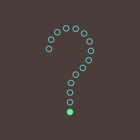

How Data Visualisation Works

Version 0.9 (build 2026-05-28)
Under construction!
Preface
This is a book about data visualisation.
Like many books, it scratches an author’s itch.
This particular itch began a long time ago, with an introduction to the works of Edward Tufte. Books like The Visual Display of Quantitative Information and Envisioning Information1 inspired an interest in how to produce effective graphics, but they were also frustrating.
Reading a Tufte book to get better at data visualisation is a bit like watching Roger Federer play to get better at tennis. It is possible to glean fragments of insight into the master’s skill and technique, but it is difficult to come away with a clear set of rules for how to succeed on our own.
At the same time, encountering the work of William S. Cleveland presented a different problem.2 Here were hard experimental results with clear implications for effective data visualisations: use length not area; use bars not pies. But they only told us about a small subset of the types of data visualisations that we could create and they only told us about a small subset of the types of questions that we could answer with those data visualisations.
The next decade or so were spent distracted by building software tools for creating data visualisations3 before returning again to the question of designing data visualisations. In those intervening decades, a fair amount has happened.
Data visualisation is an area of research for psychologists, for computer scientists, for geographers, and even for statisticians. The literature is wide and deep and complex.
This has significantly reduced the size of the second problem. We know a lot more about a wider range of data visualisation types and data visualisation tasks. Unfortunately, this has introduced a new problem. There are comprehensive and detailed overviews of current knowledge,4 but it is now difficult to consume and make sense of so much knowledge.
At the same time, there are more accessible and practical guides for creating effective data visualisations.5 These eschew much of the gory detail in favour of simple, applicable advice. The problem here is that, without the underlying explanations, the guidelines can become a long laundry list of items to check off.6 Rather than just being told that bars should always start at zero, it is more satisfying to know why bars should always start at zero.
For some of us there is a need for a middle path. We would like to understand why we are making certain data visualisation choices, but we have brains that can only hold so many ideas at once. For some of us there is utility in a framework that contains a small number of core concepts, that still covers a wide range of data visualisations, but connects them all with a relatively simple explanation.
This book attempts to provide such a framework. Rather than providing a list of dos and don’ts, it provides a list of reasons why and why not. It is a synthesis of a large number of research articles and books and it is a simplification of a large amount of knowledge. It is an attempt to prune the complexity so that we can see the forest for the trees. At the same time, enough foliage is preserved so that we see a forest made up of trees rather than just a made up forest.
I hope it helps.
Scope
There is a lot of useful information and understanding about how data visualisations work, but it is distributed throughout and embedded within a very broad, deep, and detailed data visualisation literature. This book aims to produce a simple, coherent explanation that is accessible to a non-expert audience.7
The focus of this document is static data visualisations for presentation. The assumption is that our data values have an interesting property and we want to produce a display that makes it easy and efficient for viewers to perceive that property. Some of the information that we cover will also apply to interactive graphics and to exploratory graphics, but the specific requirements of those types of data visualisation will not be addressed.8
There is also an emphasis on statistical graphics in this book, which is characterised by the use of abstract geometric symbols, such as circles and rectangles, to represent data values, as opposed to scientific graphics, which is focused more on realistic representations of physical objects, or cartography, which is focused on the geographic context of data values.
This document is also focused on what vision science has to tell us about effective data visualisation. We will consider factors that influence how rapidly and how accurately information can be extracted from a data visualisation. This will include findings from a broad range of research, encompassing Statistics, Computer Science, Psychology, and Cartography.
However, this document does not cover all fields of research that impact on data visualisation. We will not, for example, address the ethical use of data visualisation, beyond a basic assumption that we want to faithfully represent the properties of the data.9
This document is also aimed at a numerate audience, so we assume an appreciation of the importance of collecting the right data in the right way for the questions that we hope to answer.10
It is also important to acknowledge that vision science cannot yet tell us everything about how data visualisation works. However, what is known will help us to have some understanding of why some data visualisations are so effective and others are less effective.
As well as being a synthesis of a large range of data visualisation research, this document is also a simplification of that research. Some details are smoothed over and some details are just left out. The goal is to provide a framework that is easy to understand by non-experts and easy to apply to a broad range of data visualisations. References to the relevant literature are provided in footnotes so that the interested, or sceptical, reader can dig deeper.
Software
This book is about the choices that go into designing a data visualisation. It does not cover how to use software to implement those design choices and create a data visualisation.
All data visualisations in this book were created with R and add-on packages for R.11 The code for all data visualisations is available in the github repository for this book.
How to read this book
Although the goal is to provide a relatively simple conceptual framework for thinking about data visualisation, this is not a short book. The Executive Summary provides the simplest possible statement of the framework and it may be useful to resurface and revisit this summary if you become lost in the depths of one of the chapters.
A slightly longer summary of the framework is provided in the Review. The Review also provides some guidance on how the framework can be applied to the creation of a new data visualisation and the criticism of an existing one.
Another major issue with a subject this complex and a subject that is studied from so many different angles is terminology. There is no consistency across all of the different sources of information from which this book was drawn, so all that we can do is attempt to be consistent with ourselves. Some of the most important terms that will be reused relentlessly throughout this book are highlighted in the Executive Summary. The meaning of these terms is hopefully approximately what you already think, but they will be made clearer as the book progresses.
All section and figure cross-references are hyperlinks, so clicking them will navigate to the relevant section or figure. Even more helpfully, hovering the mouse over a hyperlink will show a preview of the relevant section or figure. This is particularly effective for figures because it obviates the need to reproduce the same image multiple times; just hover over the figure link to see the image that the text is referring to.
Acknowledgements
This book is based upon a large number of research articles and books, but in order to make the text appear more accessible and friendly, there are no formal citations in the main text. There are, however, a large number of footnotes, which provide the links between what is being described in the main text and the underlying research, and those footnotes contain proper citations. The real work is not being ignored, it is just being hidden behind a curtain.
Generative AI was used sparingly in the preparation of this book. Specifically, ChatGPT was employed to assist with the formatting of BibTeX references from various sources, and Google’s AI Overview (Google Gemini) provided the initial Python code for generating the optimal colour solid boundary for Figure 6.9.
This book has been generated using the Quarto publishing system. If any parts of the book look nice to you, it is probably thanks to Quarto.
I am also indebted to my wife, Julia, for the brutally honest feedback that she provided on early drafts of the text. If any parts of the book make sense to you, it is probably thanks to Julia.
How to cite this book
Please use the following citation:
Paul Murrell. How Data Visualisation Works. The University of Auckland, 2026. Version 0.9 (build 2026-05-28).
@book{murrell-hdvw-2026-05-28,
title = {How Data Visualisation Works},
author = {Murrell, Paul},
note = {Version 0.9 (build 2026-05-28)},
year = 2026,
publisher = {The University of Auckland}
}
License

This work is licensed under a Creative Commons Attribution-NonCommercial-ShareAlike 4.0 International License.
The Visual Display of Quantitative Information (Tufte 1983) and Envisioning Information (Tufte 1990) are just two of a series of influential and visually attractive books that also includes Visual Explanations (Tufte 1997) and Beautiful Evidence (Tufte 2006).↩︎
There were several studies by Cleveland, some in collaboration with Robert McGill, which were summarised and extended in two books: The Elements of Graphing Data (Cleveland 1985) and Visualizing Data (Cleveland 1993).↩︎
Some of that work is described in Murrell (2019) and some more of it is described here.↩︎
Information Visualization: Perception for Design (Ware 2021) reviews a very wide range of research that has relevance to data visualisation in one way or another and Visualization Analysis and Design (Munzner 2014) provides a comprehensive and theoretical coverage of the complete process of creating effective data visualisations.↩︎
For example, Creating More Effective Graphs (Robbins 2005), Data Visualization: A Practical Introduction (Healy 2018), and Fundamentals of Data Visualization: A Primer on Making Informative and Compelling Figures (Wilke 2019).↩︎
Examples of works that contain long lists of useful guidelines include Few (2012) and Kosslyn (2006).↩︎
Besides scratching the author’s itch, this book addresses an identified need. For example, Sönning (2022) deconstructs how a line plot works in great detail, but there is a need for something that is more accessible to and applicable by a less-expert audience.
“Going forward, we must do a better job of translating the academic research into practice, making it easier for academics and nonacademics alike to create useful, well-designed graphics.” (Vanderplas, Cook, and Hofmann 2020)
“The field of visualization suffers from several interrelated challenges around design guidelines. First, we generate many loosely connected artifacts–theoretical frameworks, controlled experiments, qualitative studies, design studies, and practitioner expertise, etc. Second, there are challenges with generalization and the synthesis of research with little to no common framework that connects them (i.e., there is no good “theory of visualization”). Third, the artifacts we produce are hard to access – we produce many difficult-to-read papers, not to mention issues of education and literacy, communication and misinformation, role in decision making, etc.” (Meyer, Quadri, and Rosen 2026)
The aim is to provide an overview that is similar in scope to more expert frameworks like (Kosslyn 1989), but more consumable by a less expert audience. The goal of this document is to provide a description that is sufficiently straightforward for the non-expert to consume, hopefully without making too many experts roll in their graves or send them to an early one. In most cases, it will be easy to see for ourselves that a visual effect is real through a simple diagram or data visualisation, but references to the relevant theories and experimental results in the literature will be provided in footnotes like this one.↩︎
Some examples of books that include a discussion of interactive graphics are Cook and Swayne (2007), Theus and Urbanek (2008), and Unwin, Theus, and Hofmann (2006).↩︎
Alberto Cairo’s writing often includes the ethical dimensions of data visualisation, e.g., Cairo (2014) and Cairo (2016).
The Data by Design project is a striking example of work with a focus on ethical data visualisation (Emory Digital Humanities Lab 2021).↩︎
We are assuming that the data we have is sufficient for the question(s) of interest and contains no substantive problems, in the sense of Healy (2018).
Examples of books that provide a more comprehensive treatment of the entire data visualisation process are Cairo (2019) and Munzner (2014).
An example of a much shorter, but still broader view of the data visualisation process is Bertini (2025).↩︎
Many of the diagrams in this book were also created with R (R Core Team 2025), but some of diagrams were created using graphviz (Ellson et al. 2002).↩︎